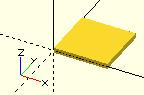
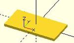

Creates a square or rectangle in the first quadrant. When center is true the square is centered on the origin. Argument names are optional if given in the order shown here.
square(size = [x, y], center = true/false); square(size = x , center = true/false);
default values: square(); yields: square(size = [1, 1], center = false);

equivalent scripts for this example square(size = 10); square(10); square([10,10]); . square(10,false); square([10,10],false); square([10,10],center=false); square(size = [10, 10], center = false); square(center = false,size = [10, 10] );

equivalent scripts for this example square([20,10],true); a=[20,10];square(a,true);
Created with the Personal Edition of HelpNDoc: Produce online help for Qt applications